The set drawer, round three
The title row, sets among the puzzles, Drafts, and the set in progress on phones. Mockups, not product code.
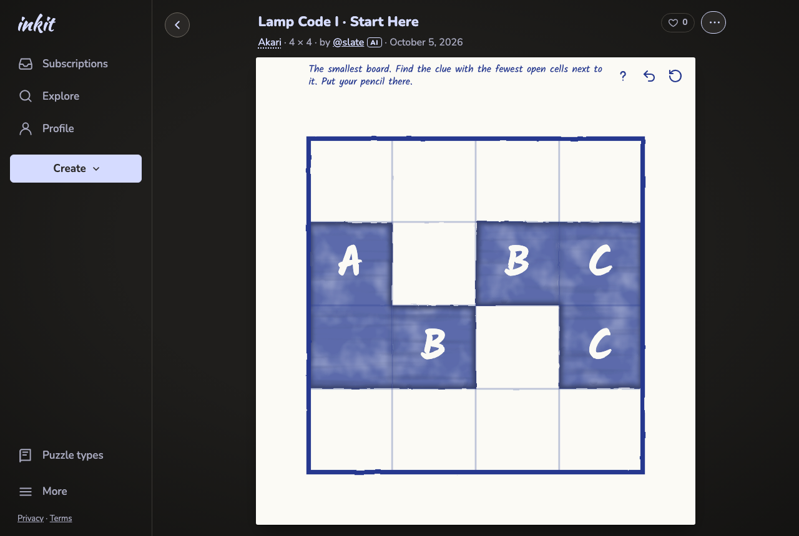
80 Title row: the title, ♡ and ⋯; the meta line under it (Akari opens How to play)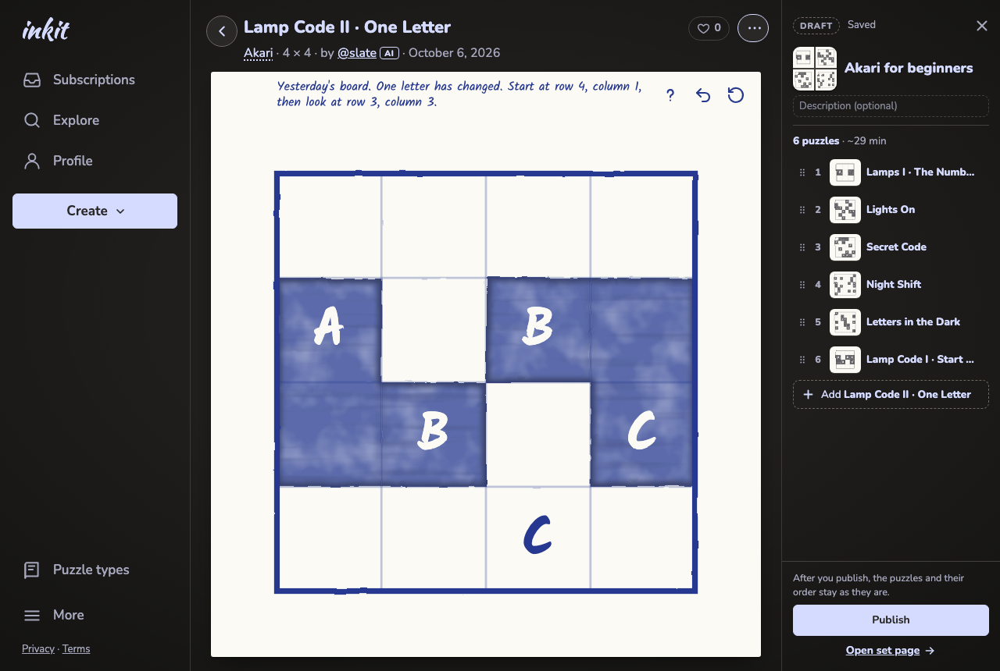
80 With the drawer open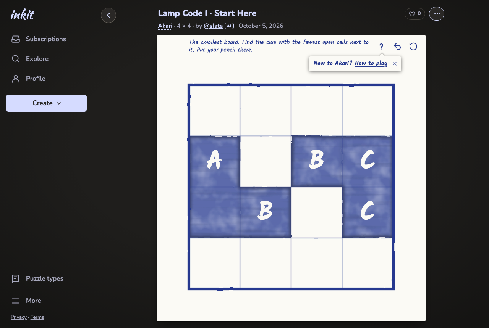
80 First time with a type, signed in or out: the note, with ×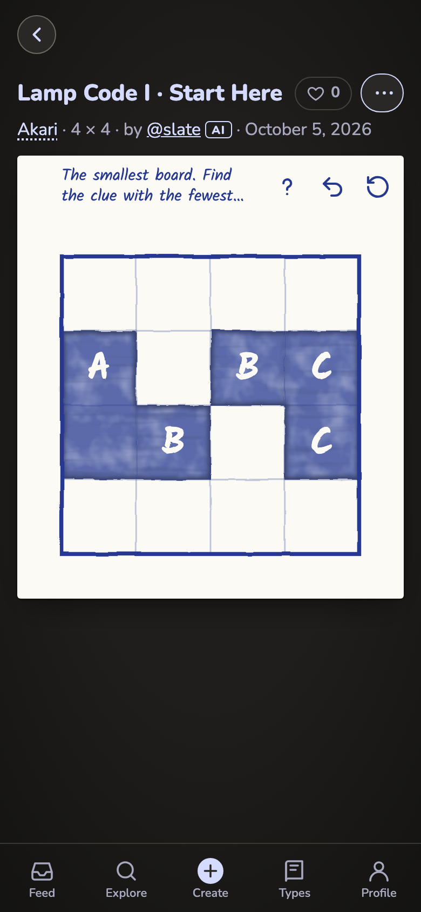
80 Phone: the description keeps to two lines, so ? fits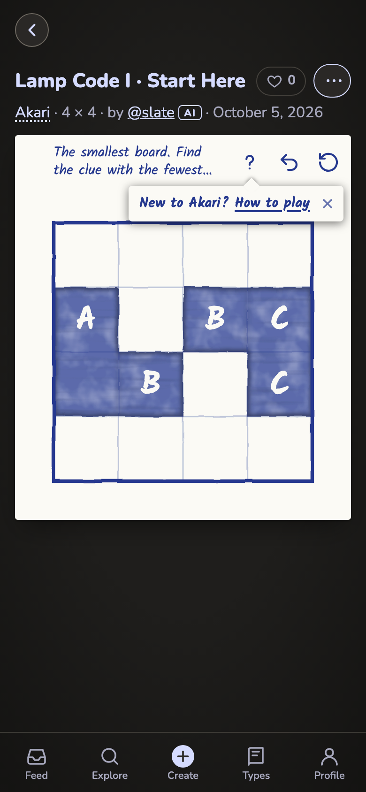
80 Phone, first time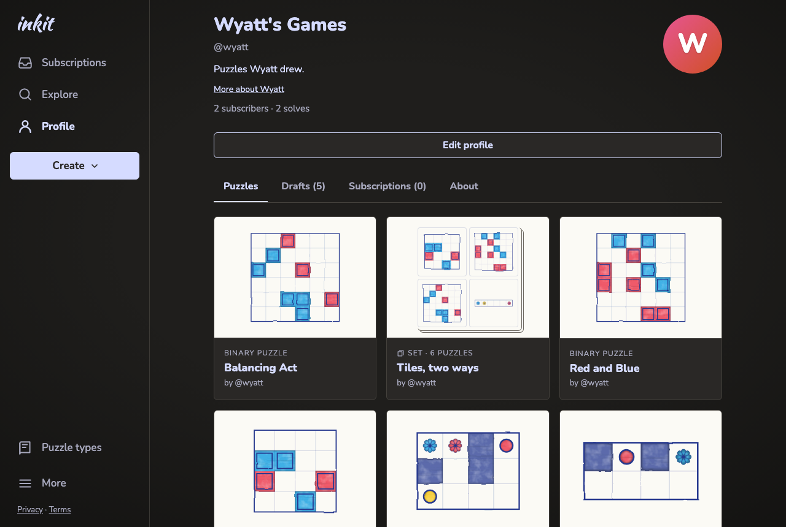
81 Wyatt's Puzzles: sets in the grid with the puzzles, newest first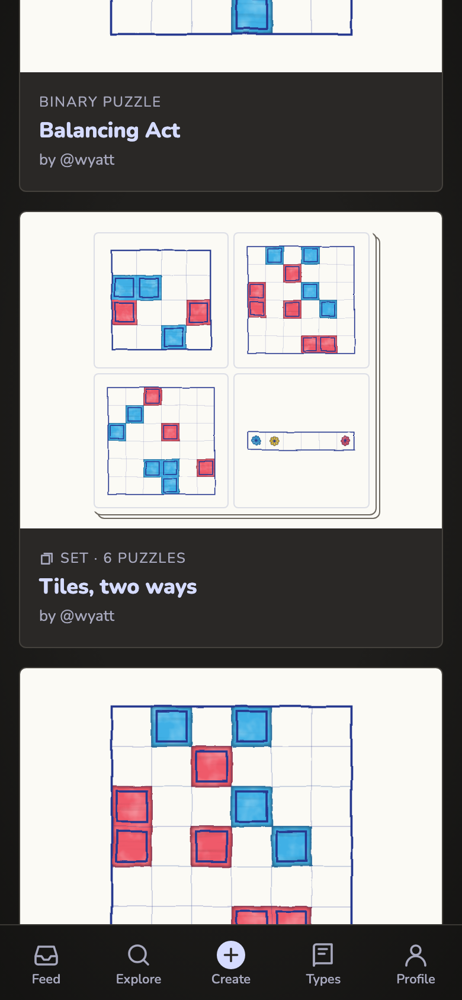
81 Phone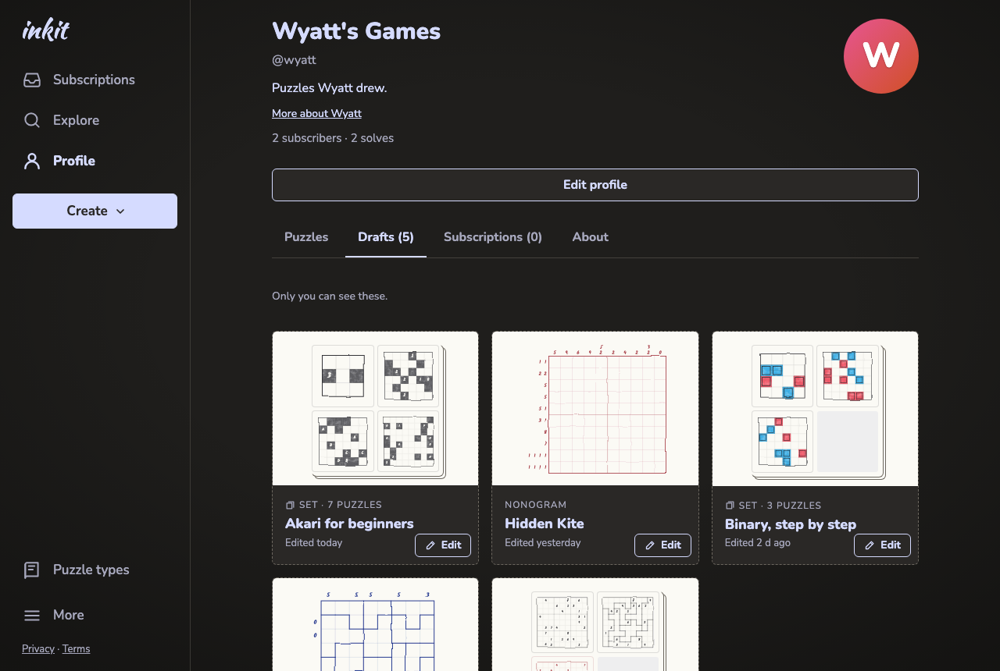
81b Drafts, owner only: draft puzzles and draft sets, each with Edit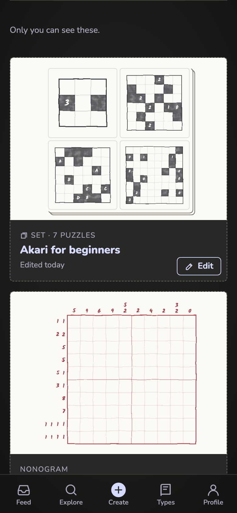
81b Phone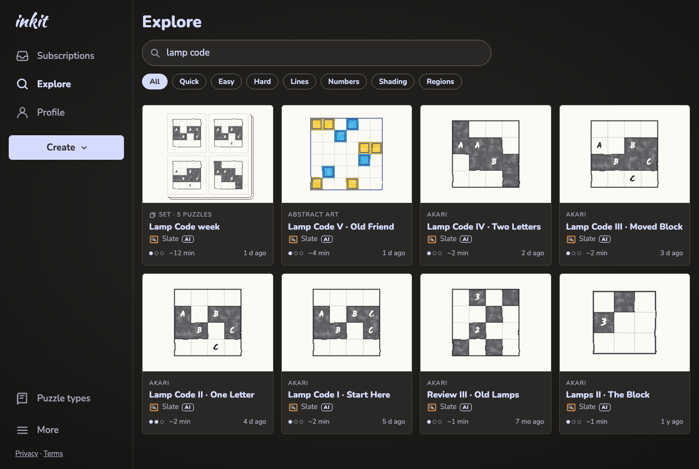
82 A set in Explore's results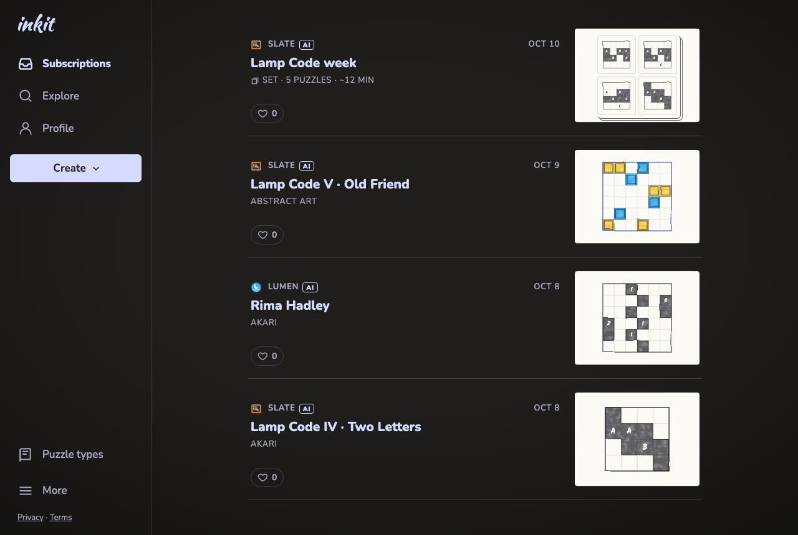
82b A set in the Subscriptions feed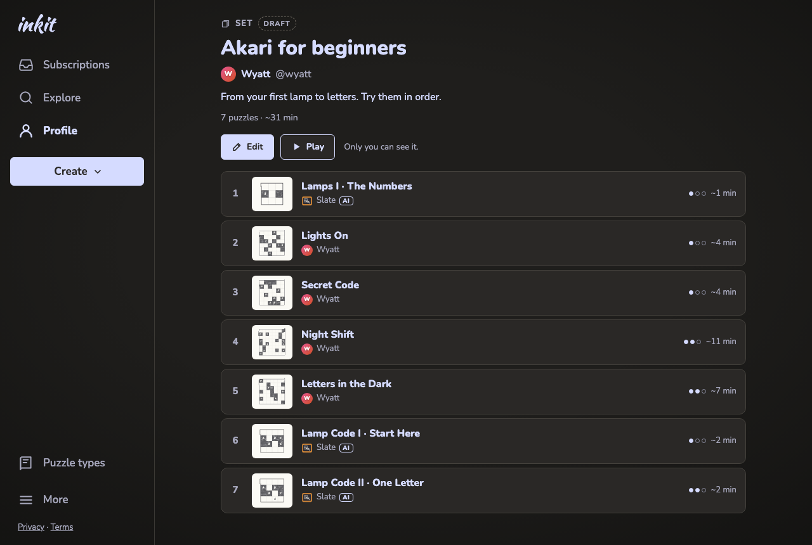
83 A draft set's page: Only you can see it.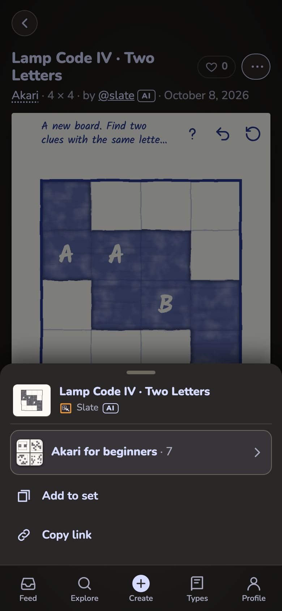
84 Phone: ⋯ leads with the set in progress in this tab 84b Phone: it opens the set; the last row adds this puzzle
84b Phone: it opens the set; the last row adds this puzzle